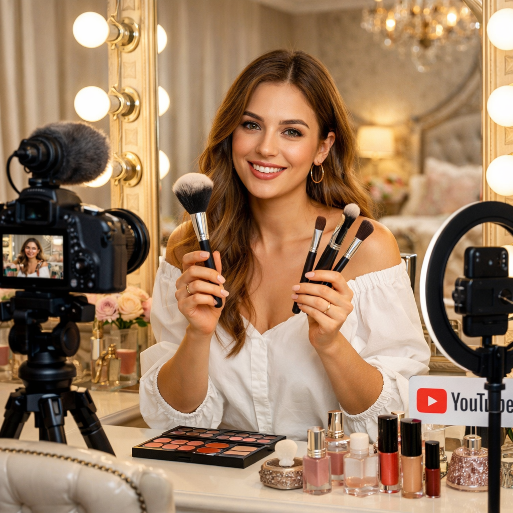

Qual a finalidade de cada pincel de maquiagem?
Por: Luana Retamiro
Vou começar falando sobre o Pincel de base: espalhar base líquida ou cremosa de forma uniforme.
Pincel kabuki: aplicar base, pó ou produtos minerais com acabamento mais polido.
Pincel de corretivo: aplicar corretivo em olheiras e pequenas áreas.
Pincel de pó: distribuir pó solto ou compacto para selar a maquiagem.
Pincel de blush: aplicar blush nas maçãs do rosto.
Pincel de contorno: marcar e definir áreas do rosto com contorno.
Pincel de iluminador: aplicar iluminador em pontos estratégicos (maçãs, nariz, arco do cupido).
Pincel leque: aplicar iluminador de forma suave ou remover excesso de produto.
Pincel de sombra: depositar sombra nas pálpebras.
Pincel de esfumar: suavizar e misturar sombras, evitando marcações.
Pincel chanfrado: preencher sobrancelhas ou aplicar delineador em gel.
Pincel lápis: aplicar sombra em detalhes, canto interno ou linha dos cílios.
Pincel para lábios: aplicar batom com mais precisão.
Escovinha (spoolie): pentear sobrancelhas e separar cílios.